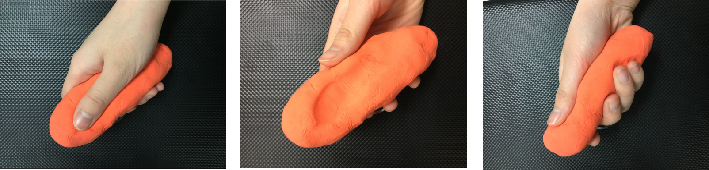
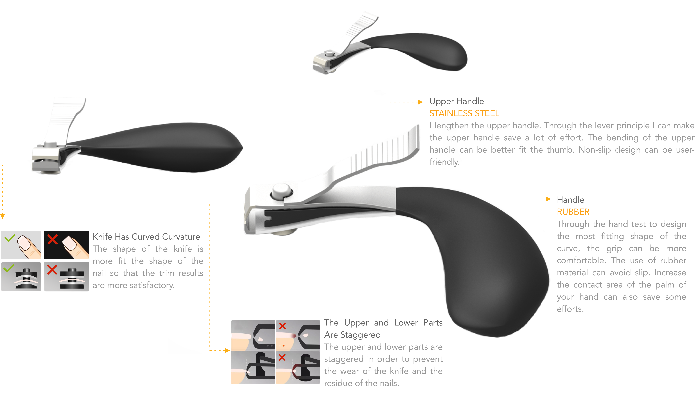
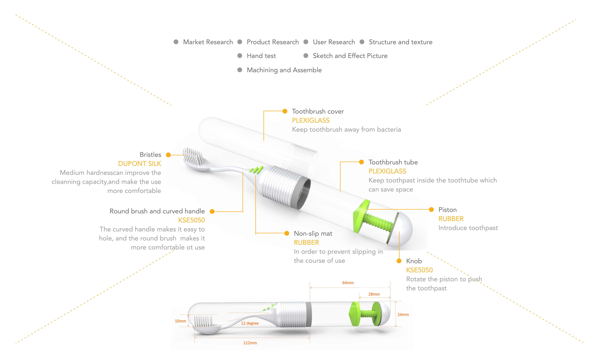

Ergonomics Analysis and Improvement of Nail Clippers
Ergonomics Analysis / Product Design
Individual Works
Beijing
Oct. 2016 - Nov. 2016

DESCRIPTION
Nail clippers as a tool commonly used in life, so I use the nail clippers to carry out ergonomic analysis. Analysis results show that the use of nail clippers is laborious, and the results are not satisfying. So in order to make nail clippers save more effort, and be better use, I do some re-design to it.
I followed the process of product design to do the re-design of nail clippers.
- Research Works: Product Research & User Research
- EMG Test (Electromyography) and hand test
- ERGONOMIC ANALYSIS
- Analysis and Re-design
- Test and Conclusion
EMG TEST

I chose three women and three men as the users to do the EMG test on their process of using nail clippers. One of the women and one of the man are left handedness, and the rest of the users are right handedness. Tests are done by control variables method, and some of the test results are shown above. As is shown in the pictures above, these two muscle groups receive more stress in the use of nail clippers. Therefore, in the design process, I should change the shape of the nail clippers and reduce the force of these two muscle groups.
HAND TEST

I use the clay to do hand test. Through the hand test I can design the most fitting shape of the curve. In that case, the grip can be more comfortable.
RE-DESIGN NAIL CLIPPERS
Through the ergonomic analysis to re-design the nail clippers. Nail knife and palm contact area is larger, making grip more stable. The shape of the handle fit the thumb makes the use of a higher degree of flexibility. While ensuring the natural state of the wrist can save more effort. Improvements in the shape of the knife can make the pruning results more satisfying.

Travel Toothbrush Design
Product Design
Individual Works
Beijing
July. 2017 - Aug. 2017
DESCRIPTION
This toothbrush is designed for travel, which can achieve the goal of toothpaste and toothbrush integration. To solve the problem that toothbrush in the carrying process is not easy to carry and easily infected with bacteria. And also through ergonomic analysis to improve, so that the user's grip can be more comfortable.

Other Works: Handmade Wooden Toy
Industrial Design
Individual Works
Beijing
Mar. 2016 - May. 2016
DESCRIPTION
Spinning throstle was a handmade wooden toy which designed by myself. Crank slider structure is used. Spinning the handle, the thrush will feed her child. In the design of the thrush appearance, I use the elements in paper crane, combined with the shape of the tangram.